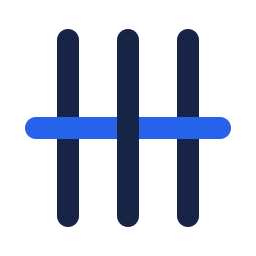
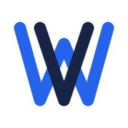
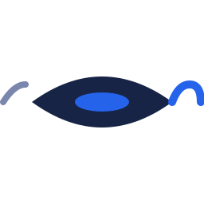

Trois directions distinctes. Chaque ligne est le même SVG rendu à 16 px (favicon), 64 px (icône d'application) et 256 px (grand format) — sur fond clair puis sur fond navy, pour vérifier que le mark tient sur les deux thèmes.
| Direction | 16 px | 64 px | 256 px (clair) | 256 px (navy) |
|---|---|---|---|---|
|
A — Trame sur chaîne
3 fils de chaîne (warp) + 1 fil de trame (weft) tissé dessus/dessous/dessus. Le plus littéral, le plus lisible aux petites tailles.
|
 |
|||
|
B — W entrelacé
La lettre W tracée par deux brins qui se croisent ; le tressage est caché dans la forme. Letter-mark coherent avec le wordmark "Weft".
|
 |
|||
|
C — Navette
La navette (shuttle) du métier qui dépose le fil. Plus dynamique, suggère orchestration / débit plutôt que le tissu fini. Perd en lisibilité sous 32 px.
|
 |
Reprise de static/img/mesh-3d.svg pour rester cohérent avec la landing actuelle.
#2563eb — bleu primaire (le fil de trame, accent)#172445 — navy (les fils de chaîne, structure)#43548a — mid-navy (motion / accent secondaire)#ccd6ec — fond clair (la page)Une fois ta direction choisie, je décline en : (1) version horizontale icône + wordmark "Weft", (2) favicon multi-tailles, (3) variante monochrome (impression / fond complexe), (4) éventuel lockup vertical pour le hero de la landing.